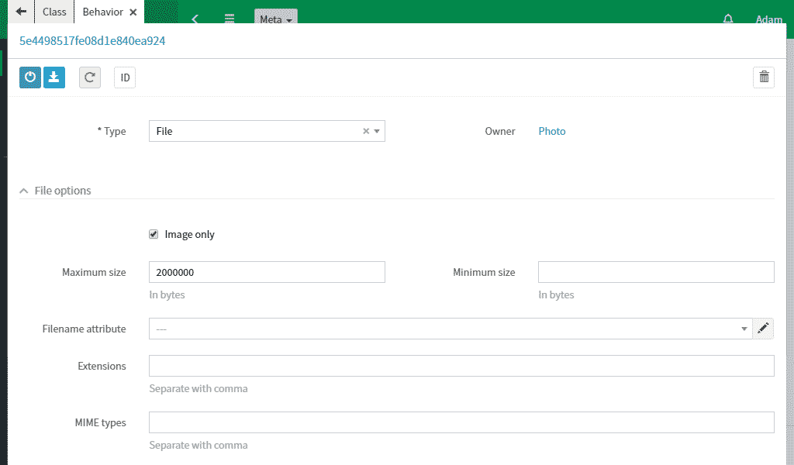

Photo class
Return to Studio and create a photo class. It will store images for articles.
Create a file attribute with File type. It will store a file storage link.
Create a description attribute with String type.
Create a orderNumber attribute with Integer type. It will store a number for sorting objects in the specified order.
Photo class must have special functionality for uploading and storing files. To do this, select Behaviors tab and add File behavior. Check Image only box in the behavior options.
Export the class. Go to Office module and create a photo by uploading files.